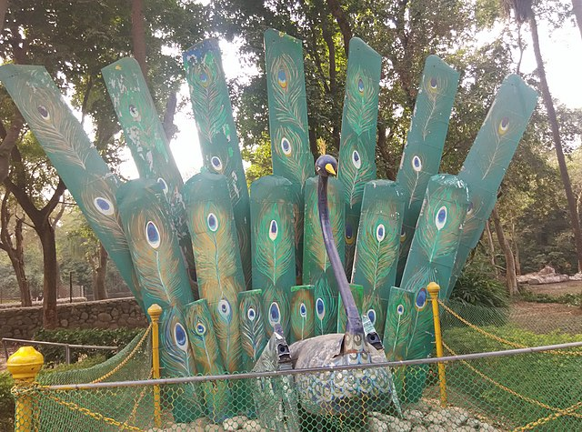

CHATTBIR ZOO
Chhatbir Zoo (formally Mahendra Chaudhary Zoological Park), is a zoological park situated close to Zirakpur, India. The zoo was constructed in the 1970s and is home to a large variety of birds, mammals and reptiles. Lying on the Chandigarh-Zirakpur-Patiala route, this zoo is located about 20 km away from Chandigarh.
- The zoo is home to 369 mammals, 400 birds and 20 reptiles.
- Non-exhaustive list:
-
- Asian palm civet
- lion
- Barasingha
- Bengal fox
- Bengal tiger
- Blackbuck
- Chinkara
- Chital
- Common marmoset
- Four-horned antelope
- Gaur
- Golden jackal
- Hamadryas baboon
- Himalayan black bear
- Himalayan goral
- Hippopotamus
- crested porcupine
- Indian elephant
- Indian leopard
- Indian spotted chevrotain
- Mugger crocodile
